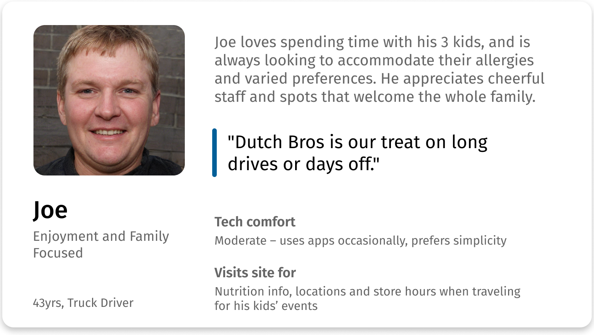

Overview
Quick Data
- My Role
- The early phases were fully collaborative: survey, personas, web accessibility analysis, usability testing, and design recommendations. The final step of design and documentation was accomplished individually.
- Team
- 4 UX designers
- Setting
- Student Project at Arizona State University
- Tools
- Figma, Google Suite
- Timeframe
- 2 months
Summary
Context
Dutch Bros is a drive-through chain known for coffee, customizable drinks and friendly staff. It has 500+ locations across the United States, mainly along the west & southwest regions.
With 25%–75% of users failing simple “find” tasks such as a store location’s address, the core purpose of the Dutch Bros website was undermined.
Solutions
Users are able to navigate smoothly due to improvements such as: clarifications and streamlining of the site structure; and making backtracking easy
Users are able to interact effectively with the website. Functionality is clear at a glance, strengthening visual signals with visible controls and removing false suggestions of interactivity.
Process
In this project, all the steps were equally split among the team along with sessions of group feedback and collaboration–except for the evaluation and the hi-fi wireframes, which were done solo.
- User research: Survey, personas
- Evaluate: Web accessibility guidelines evaluation*, usability testing
- Define: Design goals
- Design: Brainstorming, high-fidelity wireframes*
*Completed individually.
User Research
Survey
Methods
We collaborated to create and conduct a 13-question survey to gather insights into user demographics and primary goals when visiting the Dutch Bros website. The 38 respondents had varying levels of familiarity with the brand, including some loyal customers. This offered a well-rounded view of user needs and expectations.
Findings
Key user goals: Menu, locations, and store hours
Repondants revealed that the primary reason they visit the Dutch Bros website is to view the menu, find a store location, or check store hours. Thus, it is critical that users are able to access this information quickly.
Comfort with technology varied
Respondents’ self-reports of tech proficiency ran the gamut from low to advanced, highlighting the importance of features that are easy to identify and use for all users–regardless of digital proficiency.
Personas
To encourage empathy and user-centered designs, we created two personas based on survey data. Here are snapshots of the personas.
These personas guided design solutions to address the needs of speed-focused and enjoyment-focused users.
Evaluate
Web Accessibility Guidelines
Methods
To discover potential usability issues, I conducted a systematic evaluation using Dr. David Travis’ Web Accessibility Guidelines, which evaluates designs for general accessibility and usability issues for all users (in comparison, WCAG is a legal and technical standard, not a design standard. In addition, it focuses on accessibility for people with disabilities rather than general usability).
Scores were calculated based on the design’s success rates across the 20-40 checklist items for each accessibility category.
Findings
Homepage and navigation hinder user success
With 100% being a perfect score, middling scores on the homepage (63%) and navigation (66%) indicated barriers to finding key information, which would reduce user success and satisfaction. This was later validated by usability testing.
Strong visual design, enhancing engagement
As for strengths, the site scored a high 82% for strong page layouts and visual design, which suggests strong readability and engagement.
Usability Testing
Methods
To validate evaluation findings and assess the core tasks that bring value to users and Dutch Bros, we created and conducted usability testing using targeted scenarios and tasks.
Goals:
- Accessing the menu and store info
- Workforce recruitment
- Online shopping
We decided to focus on these areas as they were critical goals. In particular, the first area was highlighted by users as their purpose for using the website, while the latter two are important tasks for the company to maintain their workforce and secondary income stream.
Analysis
We held a group synthesis session to analyze the data and identify key usability concerns. I took the initiative to create a Google spreadsheet that would automatically calculate metrics and highlight critical results, while other team members took charge of qualitative analysis.
Findings
The findings validated results from the accessibility evaluation and yielded additional details on obstacles.
Navigation confusion blocked key tasks
A confusing site structure and unclear labeling prevented users from completing key tasks.
- Online shop: 38% of participants failed to navigate between the main site and e-commerce store, often not realizing they were on a separate site (as Dutch Bros uses a 3rd party platform for e-commerce).
- Recruitment: 25% couldn’t find HQ job opening due to a misleading “View Openings” button that only showed barista openings.
One participant said they would “give up in a real situation,” highlighting the real-world impact of navigation failure.
Shortcuts go unnoticed, making navigation take longer
Lack of clarity caused users to waste time looking around and make extra clicks, completely overlooking shortcuts.
- Menu & store info: Shortcuts on the home page made the menu and store info accessible in seconds, but participants instead averaged 1.5 minutes for each task by overlooking the unlabeled shortcut buttons.
- Recruitment: Participants spent over a minute locating the age requirement for employment—something easily searchable—because the careers FAQ search bar lacked prominence and perceived utility.
Poor visual signals created confusion
Ineffective or misleading visuals led to frustration and task failure.
- Menu: Snack listings appeared clickable, confusing participants who expected to access nutrition info.
- Recruitment & home page: 25% of users failed a horizontal scroll task due to a lack of visible controls and the unfamiliar click-and-drag interaction on desktop–which actually worked well for mobile participants.
Define
Design Goals
With user motivations and usability obstacles discovered, it was time to define the direction of the redesign.
How might we improve navigation and fix visual signals to drive the core goals, which are:
- Accessing the menu and store info
- Workforce recruitment
- Shop online
These goals are critical–respectively, they were: highlighted by users; support business operations; and generate additional income.
Design
Solutions
Together, we brainstormed and prioritized solutions for each usability issue as the second part of our group synthesis session.
Constraints
We grounded our solutions in realistic conditions, ensuring value.
- Time constraint: We prioritized ideas based on user impact and effort-to-value ratio due to a tight 1-week deadline for the design phase.
- Customization constraint: We designed workarounds to clarify navigation where third-party tools limited customization.
This collaborative process helped align the team on a set of focused, high-impact design recommendations.
Wireframed Solutions
The final design clarifies navigation and site functionality, driving user success in core goals and resolving usability obstacles. This portion of the project was completed individually.
Built on existing strengths
- Kept the effective layout and visual styling, focusing only on problematic areas (helpful given the one-week timeline).
- Delivered responsive solutions to support users accessing menus and store info on the go (ie. mobile and desktop sizes).
Streamlined access to core user needs (menu & store info)
- Emphasized shortcuts to menu and store info by using descriptive labels rather than relying on icons only.
- Ensured user control with tangible buttons for horizontal scrolling.
- Cut misleading visuals: Remove “clickable” styling for non-interactive items in the menu.

Simplified workforce recruitment
- Simplified structure for improved search: Combined all job openings to the same page, making it easier for users to view all options and find the right fit without navigating through multiple pages.
- Easier access to career info: Emphasized the search bar so users can take advantage of efficient navigation.

Seamless online shopping
- Clarified site structure by using visual cues to emphasize that the main site and the e-commerce site are different.
- Strengthened user control by making backtracking easy with a link back to the main site and a trash button to manage shopping cart items.

Deliver
Stakeholder Communication
To communicate progress, insights, and to get stakeholder buy-in, we created 2 pieces of stakeholder communication:
- Presentation: Reported key usability issues and design recommendations to ensure informed stakeholder decisions and team alignment.
- Design Rationale Report: Walkthrough of redesign and explaination of design choices.
Takeaways
Collaboration multiplies impact
I really enjoyed the experience working with my first time UX team. Peer critique with multiple points of view helped us form ideas faster and stay user-centered without bias. This was a very encouraging experience for seeking feedback and leveraging the power of collaborative design.
Progress through incremental change
This project expanded my view of design to include small, incremental wins that build up major impact. UX improvements don’t have to be (and usually aren’t) complete overhauls.
If we had more time: Validate solutions
Given more time, I would have liked to validate the design solutions with a second round of usability testing, especially as we can simply compare the “before” and “after” metrics such as time taken or success rates to evaluate effectiveness.